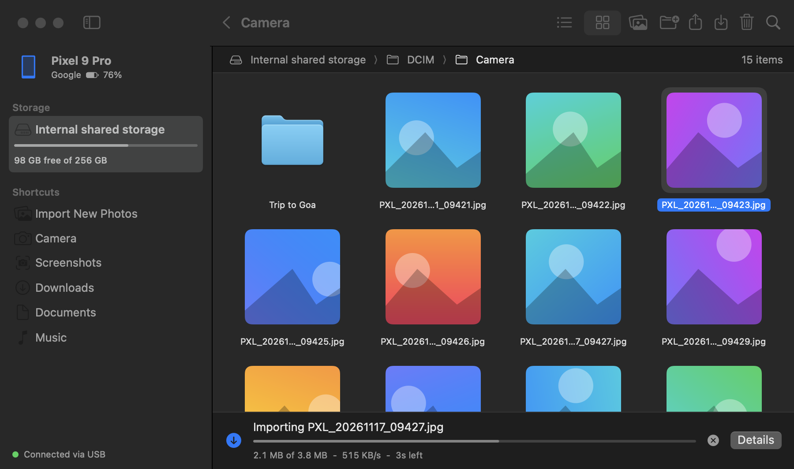

Android File Transfer for Mac,
built for Apple Silicon
Sideport is a free, open-source app for moving files between your Android phone and your M1, M2, M3 or M4 Mac over USB. It's native, small, and adds photo thumbnails and one-click photo import.
or brew install --cask a-kash-singh/tap/sideport

Why Sideport
Native Apple Silicon
A 1.4 MB SwiftUI app. No Rosetta, no Electron. Runs on macOS 14 and later.
Photo thumbnails
Browse your camera roll as previews, without downloading every photo first.
Import new photos
One click copies only the photos and videos you haven't imported yet, keeping their original dates.
Quick Look
Press Space to preview a photo, video or document straight from the phone.
Drag and drop
Move files and whole folders between Finder and the phone, including files over 4 GB.
Just works
Finds the phone automatically, reconnects after a replug, and frees it from Image Capture.
Frequently asked questions
How do I transfer files from Android to a Mac with an M1, M2, M3 or M4 chip?
Install Sideport, connect the phone with a USB cable, unlock it and choose "File transfer" in the USB notification. Then drag files to Finder or click Import New Photos.
Does Android File Transfer work on Apple Silicon Macs?
Google's Android File Transfer only runs through Rosetta 2, is no longer offered by Google, and can't copy files over 4 GB. Sideport is a native replacement.
My Mac says "No Android device found". What should I do?
Unlock the phone, choose "File transfer" instead of "Charging only", and use a data cable. Quit other apps that use the phone, such as Image Capture or Photos. Sideport releases the phone from Image Capture automatically.
Do I need Wi-Fi, an account or an app on the phone?
No. Sideport works over USB using MTP, the protocol Android already uses for file transfer.
Is it free?
Yes. Sideport is free and open source under the MIT license.